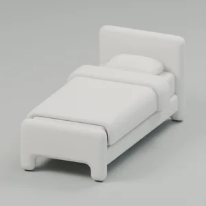
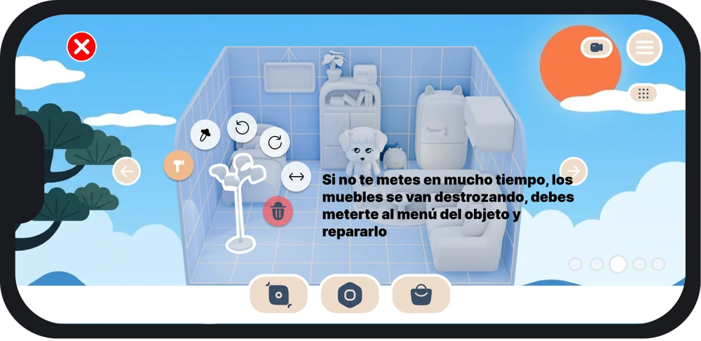

Mayo · 2026
El primer cuarto sobre una cuadrícula
Para que un mueble cayera en la casilla correcta, hacía falta definir su punto de apoyo. En mayo se montó un cuarto de prueba y se prepararon cerca de 60 muebles básicos.
Explorar las piezas ↓ Ver la prueba del mes ↓
Mayo · 2026
Avances por sistema
HabitacionesColocar y editar una colección de muebles
Qué se hizo
Se armó el primer cuarto por módulos y se catalogaron unos 60 muebles básicos con coordenadas de textura y punto de origen. El catálogo distinguía piezas de suelo, pared y tapetes, además de propuestas especiales y colecciones.
Cómo funciona
El origen determina dónde se coloca cada pieza. En el diseño del editor, el jugador puede girarla, cambiar su estilo, repararla o quitarla. Las láminas conectan el boceto del mueble con su posición en el cuarto.
 Personaje y pelajeUna malla que se mueve y admite varios pelajes
Personaje y pelajeUna malla que se mueve y admite varios pelajes
Qué se hizo
Se terminó la topología de cabeza y cuerpo, se ajustaron los cortes para la deformación y se asignaron huesos y pesos. El equipo produjo aproximadamente diez texturas RGB y revisó los patrones de las orejas.
Cómo funciona
Los pesos determinan qué zona sigue a cada hueso al moverse. En la superficie, distintas máscaras distribuyen una paleta de tres o cuatro colores. Así cambia la mancha sin reconstruir la anatomía.
Colección de mayo
Las piezas del primer cuarto
Objetos a escala del Yunipet
La cama, la silla y el refrigerador proceden de la escena de Blender para probar interacciones. La colección de mayo fue más amplia y reunió unos 60 muebles básicos.

Catálogo de mobiliarioLa recámara, pieza por piezaAbre la cama, el buró o el escritorio y gira el modelo para ver cómo está construido.↗Ver cómo se editaba un mueble
Secuencia de imágenes
Cómo se editaba un mueble
El ejemplo del equipo era una lámpara de pie. Estas cuatro pantallas del primer editor muestran el menú de la lámpara y las propuestas para repararla, girarla o cambiarle el estilo.
